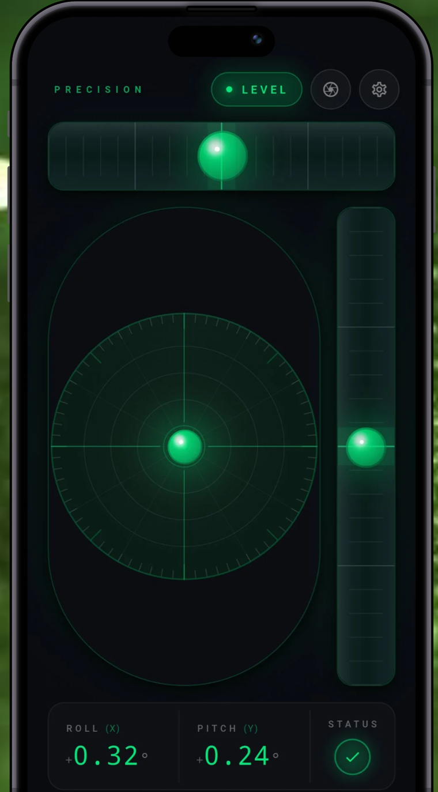
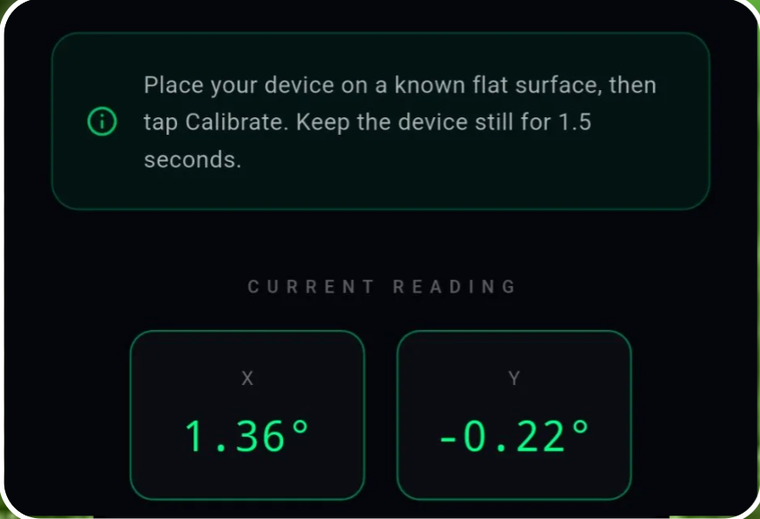
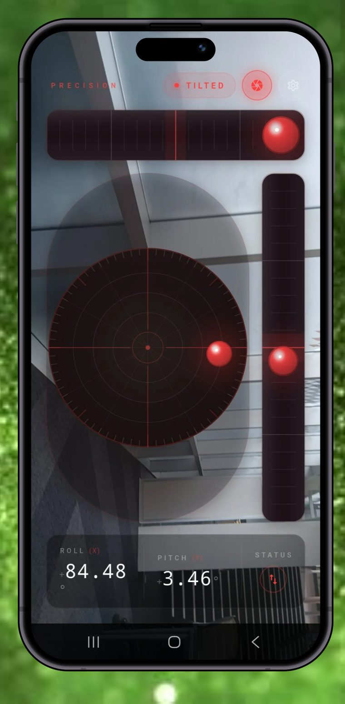
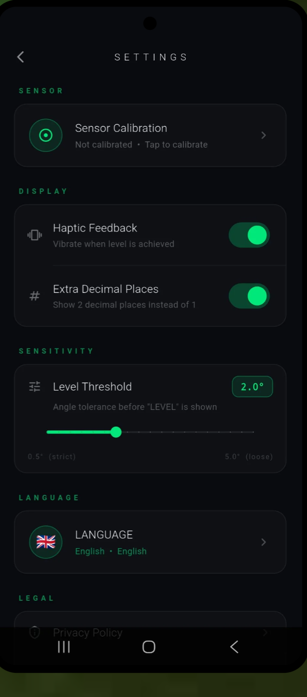
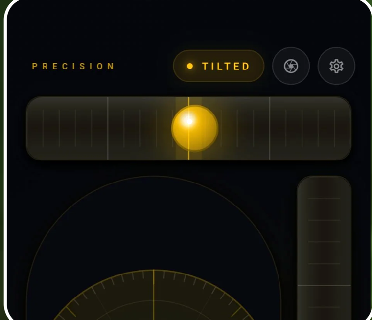
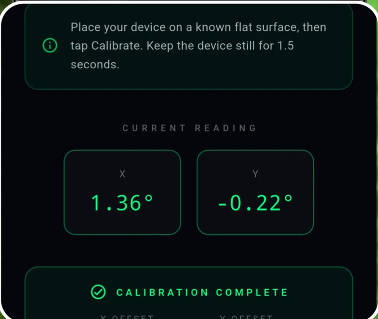

Precision Level turns the sensors already in your pocket into a professional-grade bubble level, angle finder, and AR camera level — accurate to a fraction of a degree, with zero extra hardware.

Roll and pitch are tracked simultaneously and shown live, so you can see exactly which direction a surface leans — not just whether it's flat.
Switch to camera mode and the level overlays directly on the real world, so you can line up shelves, frames, and fixtures without looking away.
Place your device on any known-flat surface, tap Calibrate, and Precision Level zeroes its sensors against that reference in 1.5 seconds.
Set your own LEVEL tolerance — from a strict 0.5° for fine joinery to a relaxed 5.0° for a quick eyeball check.
Feel a vibration the instant you hit level, so you can keep both eyes on the work instead of the screen.
Toggle between 1 and 2 decimal places whenever a job calls for finer resolution than a standard angle finder gives you.
No GPS, no internet, no account, no subscription. Just your phone's own sensors, doing pure physics, anywhere you are.
Built-in language switching means the app speaks your crew's language on every job site.
Every phone sensor has a tiny built-in offset. Precision Level removes it: set your device on any surface you know is flat — a machinist's table, a kitchen counter, a granite slab — tap Calibrate, and hold still for 1.5 seconds.
No lab equipment, no laser level required — just a flat reference and two taps.


Switch into camera mode and Precision Level overlays a live roll and pitch readout directly on top of what your camera sees — perfect for hanging a frame, mounting a TV bracket, or squaring up a shelf without holding a separate tool against the surface.
Precision Level replaces a drawer full of spirit levels, angle finders, and inclinometers. Here's where it gets used:
Every job has a different tolerance for "good enough." A cabinetmaker and a fence builder don't need the same precision — so Precision Level lets you set it yourself, then get out of your way.

Most level apps give you a bubble and a "close enough." Precision Level gives you a glowing dial that tracks roll and pitch as continuous values, plus a side-mounted pitch rail for vertical surfaces.
The dial glows amber while tilted and snaps to green the instant you're level — a clear, glanceable signal you can read from arm's length while you're holding a shelf in place.
This is the difference between an app that estimates level and a digital level that actually measures it.


No tape measure guesswork, no borrowed laser level. Just your phone, calibrated once, accurate every time. Free to download, no sign-up required.